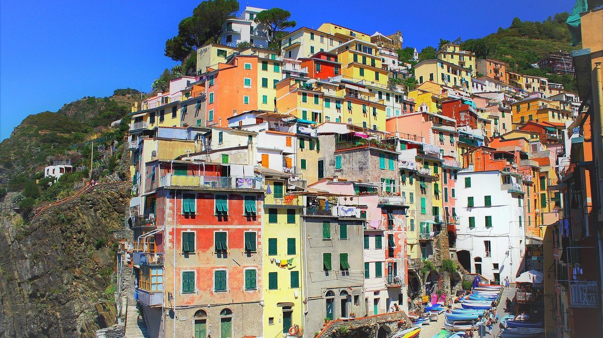

Race, Cinque Terre

Behind
Best +0:01
371W
Target 418 W-47 W
- Cadence
- 87rpm
- Heart
- 140bpm
- Speed
- 26.5km/h
Recover8 of 20
1:30
Next: · 3:00 at level 22
-5.4%
60 m climbed
4.04 km
11
Resistance / 32
Solo races your best-time ghost: position reads Ahead or Behind, and solo alone gets a Pause button. Frozen at 9:30.